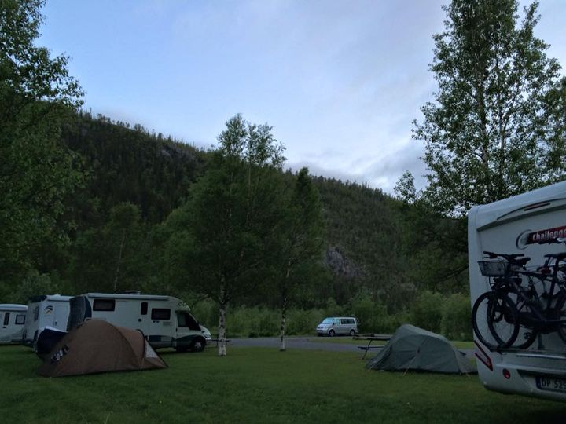

June 22nd 2015
No turning back now, usual first days riding wet. Lucky to find an excellent camp site, as the data would not work on the phone 3 calls to 02 didn’t sort it, sorted myself in the end how’s that for an olden. Ware would we be without these electric gadgets, hope to get up or past Hamburg Germany tomorrow, Weathers better to.
June 23rd
Not much to report tonight, when you’ve been on the Belgium – German motorways in the rain most of the day and have covering about 450 miles its a hard day, for those that have done it on a bike will know what I mean. Reached my objective just outside Hamburg, the old phone took me Wright to the camp site, getting good with this phone stuff. Can’t give you any interesting pictures folks just another of the setting around my tent, hopefully some interesting riding and pic tomorrow as I will be getting into Denmark tomorrow, and him up there has given me my full quota of rain to get it out of the way.

June 24th
If you look hard to the right very hard, iPhone shit no zooms, is the longest bridge + suspension bridge in the middle I’ve crossed, connects Denmark to the mainland my photo does not do it justice. After a relentless German motorway, have finally reached Denmark is getting a bit interesting now. While traveling on the Germans motorway have noticed the trucks run in a convoy in the slow lane the BMW and Audi s run the fast lane at a 100+ and the rest of us have to survive in the middle lane, run past the Danish border or sign, the traffic disappears and I am the king of the fast lane again along with the odd micro or Datsun. Accommodation tonight is the 5* water front tented view as seen by my photo. Would have to sell my bike to be able to afford a view like this in a hotel, and of cause bedding is natural medow grass how’s that for about £15 who sed it was dear up here. Sweden tomorrow.x
June 25th
Am tucked up in my cosy sleeping ready for sleep now its 11pm here. About 20 miles from Oslo Norway and still poxy daylight. Punched out the miles today, 450 not bad as didn’t get going till 12. So haven’t had time for the photograph stuff, have put one in of the sky from the campsite again iPhone doesn’t do it justice. You can read the sky from a distance, so flat, you got 3 or 4 mini rain storm going on all over. Looking forward to getting into Norway tomorrow hopefully over to the Atlantic road. It’s still bleeding daylight, that’s the one ingredient that will stop me from sleeping daylight.
June 26th
Bit of a slog yesterday, it give me that extra day to spend in Norway now. Couple of hours into Norway makes the long trip up here well worth it. You know when you find a good riding road or roads and it always comes to an end before you are satisfied. Well Norway bet me today the roads didn’t stop twisting around the lakes and amazing views. Only managed to cover 200 miles of it. Possible another 700 to cover, what a bikers country. Had a bit of a scare to day tried to negotiate a very slow u turn, engine cut, with the weight of the bike, lost my balance, had to let her down in the road no damage was a heavy beast to pick up, as no one was about to help, thought later should have took a picture. Gone 11pm here still light, must get off now, need my stamina for those lovely roads tomorrow.x
June 27th
Couldn’t wait till tonight look at this amazing view folks

June 27th
Plenty of snow up here. About 1800. Shore this road is disappearing down into Mother Earth. Someone up there must be rewarding me, don’t know what for. Today was the best days riding I ever had, the sun was out and at one point I rode for 30 min seeing only 1 car, so much scenery to take in endless. If I was asked to map out the best Evers days ride It wouldn’t come any ware near that

June 28th
Been riding all day and had to force myself to stop to take this picture.How’s this for gone midnight
June 29th
Been a long day near on 400 none motorway miles covered. At one point didn’t want to pull up tonight, the road and me were flowing along a treat and as you never see the night here I lost all ideas of time, was 10.30 my time when I pulled up. Been blessed with the weather. Started the day with a trip over the highly recommended atlantic road, I thought it was ok, it didn’t send any chills down my spine, then the day before would have taken some beating. The rest of the days been spent on fast as slow flowing road so smooth to, mile after mile. Have clocked up just off 2500 mile and still have 400 ish to reach the north tip. Here’s some picture from today. X
June 29th
Was well impressed with this bridge though, so thought I would get a pic by it.

June 30th
Still on the road up here,waiting for a ferry, been island jumping today all day, the area was recommended twice so had to visit, put me behind now. Am so far north now there isn’t any night, so on went the heated jacket and glove, and am still enjoying the roads. Hoping to make nordcap tomorrow. Here’s some pictures of the day.
July 1st
Was a cold night, rode up to 2am, with the daylight you louse all perspective of time of day, leaves me about 8 hours to reach northernmost point of europe, easy day or should be,have issue with the Ktm been getting a little noise co wing from the rear end, seem to be getting worse. Turns out I have a stretched link on the chain, bit worrying, as have about 250 miles before I reach the north end would be gutted if after so must mileage i didn’t make it, did contemplating cutting across to Sweden and finding a Ktm dealer. Have decided to push on turned the scot oiler up and ride smooth. Done 50 miles hasn’t got any worse, so cross your fingers for me folks. Hopefully when I get into Finland find a Ktm shop sort me a new chain and sprocket, it anyone out there is on the web, have a look for one as close to the north as poAndy Spink
July 1st
Camped down for the night about 80 miles outside nordkap, all came good in the end bike running ok now. The last 50 or so mile, the landscape has been so barren a bit strange, thinking about I am in the arctic circle. You have to the catch a ferry over to nordkap, quick run over there In the morning, then off to Finland, it’s not far from here so should be into it tomorrow, kind of had my fill of Norway now, covered best part of it. Am told Finlands roads are long and strait, do me for now.ssible, and forward the contact details, phone number would be grateful.
July 2nd
Have arrived, feel a sense of achievement, weather a bit bleak on the way up here, but turned out good later, as the picture tells. Is a big visitor centre here with information and videos about the history on norkap not usually my think, but found very interesting, explains the midnight sun and how the northern lights happen. Be pushing off for Finland soon it’s not far from here so would like to make the borders today. Will leave you now so I can enjoy my Last moments here.
July 2nd
After the highs of Norway and norkap, I hit the road for Finland, couple of 100 mile I was crossing the border. Be hard for Finland to live up to Norway, first impressions are the landscape is flat. The roads are so strait and long in Places, couple of times a group of reindeer just amble across the road in front of me with that laid back manner,and the mossy population is big. I am shore they have been chasing me from the time I entered Finland soon as I stopped to camp they had me barstards.
July 3rd
Late one tonight had a job finding a campsite, been raining for the last 100 miles to, in the end found a bit of grass behind a fuel come dinner, that will have to do. Very close the the Russian border not the crossing that’s about 150 miles further on. Must of covered 500 miles + wanted to put in the milage today, will give me more time in Russia. Besides Finlands roads are just good for that, in places they have the odd bend, not saying Finland is a letdown. The bits in the middle are most certainly interesting but not the roads. I did come across this ski jump, and in my inquisitiveness for a bit of excitement decided to take the Ktm up under the chair life’s for a closer look, was quite challenging, here is some pictures of the jump. Plan tomorrow is to change my rear tyre, and then press on to Saint Petersburg. Hope to be in Russia 3 to 4 days so unless I find a wi fi you are not going to hear from me as data is costly. I am intending to go for some luxury and stop in some sort of hotel.
July 4th
They let me in, that was an experience. You know all those movies we seen over the year with the Russia’s involved,was just like that, felt like I was followed for miles after by the KGB,put me on edge. Had to turn the data back on was having no luck finding a hotel, that goggle search never fails, picker me out a nice hotel secure parking for £55 20 min walk from the main square.thats not bad all the rest were upwards of £150 a night. Have no photos of yet, was hoping to take some at the boarder crossing, to worried they would lock me up as a spy. Off for a walk now to explore.

July 5th
Not a lot to report today, been on the road all day, covered about 500 miles of very bad Russian roads from staint peterboug to moscow. Been a hard day, that day off relaxed me,got me out of the groove. Now I’ve got another one tomorrow Looking round moscow, this adventures supposed to be painful. Be back punching the milage out again on Tuesday got to be 2000 + to get me home. Just a couple of pictures not that interesting, one of the hotel I stayed at very good and cheap £40 a night with breakfast. Have noticed fuel is cheap here cost me under a £5 to fill up compared to £20+ back home. Nearly forgot was pulled over coming into moscow by a biker cop, was ok when I had show my doc, and told him I was from England, he Evan smiled and shook my hand, there not all bad.
July 6th
Hi latest update, bike all securely locked up under the hotel, I ventured into moscows centre. The receptionist makes if sound easy dealing with the metro. Not a lot of the direction are in English and 90% of Russians look at you as if you have just been beamed down from Mars. My saving grace came in a young Russian man who was going my way. Done some walking moscows spread out a bit, the pictures are of red square and my Russian bud. It is a great experience seeing these monuments and buildings but I kind of had my fill of them now, give me the open roads mountains and poverty any day.
July 7th
Glad to be out of the city best part of the day sent getting out of Russia, reached the board mid afternoon. More hassle getting out of Russia and into Latvia, must of took 2 hours to clear both. Thought great am away sat nav tells me to hang a left about a mile down the road, Tarmac finishes, was onto gravel Rutted in places. Stay on this 30 to 40 miles, and it was out in the middle of nowhere not a sole about, just when stuff started to enter my head like braking down , no fuel , getting ambushed , that black stuff arrived not top grade but it put my mind to rest. I will never complain about uk s roads again, this end of the EU roads are made up of patch repairs. Camp has had to be in the wild, got late so just pulled of into the woods and found a spot, pictures . I found this helicopter in someone’s back garden just had to take a closer look.
July 8th
Boring day not a lot to report. Been on the polish roads all day the lorry s have been nose to tail both ways every road, not much fun. Don’t think they have much of a motorway network. Am wild camping again tonight, poles can’t be into camping as couldn’t find a site within 200 miles of me. The landscape is mainly rolling hills or farmland. Did find this nasty power station
July 9th
Road wise all the same this part of europe. I’ve had charging problems with my phone been limited on photos from yesterday, this morning carried on with its problems when I eventuality came round from a very sound sleep, I had to deal with a rear puncher, in the middle of the woods, soft ground made it hard to get the bike up on the centre stand, and a full on attach from the Mossy’s tribe, not a good start. All sorted, eventually the polish motorways came along, I was at Auschwitz by mid day, what can I say about this place that’s not on line, but being there makes you realise it really did happen. If you are ever that way is defiantly worth a visit. Faced with the search for a camp site or punch on home, as I had achieved all the thing I intended on doing and road wise was getting a bit repetitive. Give it a go according to the sat nav it’s 998 miles so maybe in the uk by mid day tomorrow adventure over.
July 10th
Good morning still 422 to go
July 10th
All done Mr gunning. Not a breeze needed a couple of very handy benches to catch up on, on the ferry usual gaggle of bikers congregated on the key, one even got to travel back to Scotland,didn’t have the hart to tell him I had 4 miles to home, did in the end.
July 11th
Summing up my adventure. I set out and achieved all and more of the aims for going. The highs have got to be Norway the people the landscape the roads and best of all there’s a surprise around every bend.i will return one day. Russia was some ware I had been wanting to visit for some time and it didn’t disappoint. I covered just under 7000 mile and was looking forward to home and seeing pat. I would recommend a road trip motorcycle or car like this to Really experience what’s out there. Till next time.